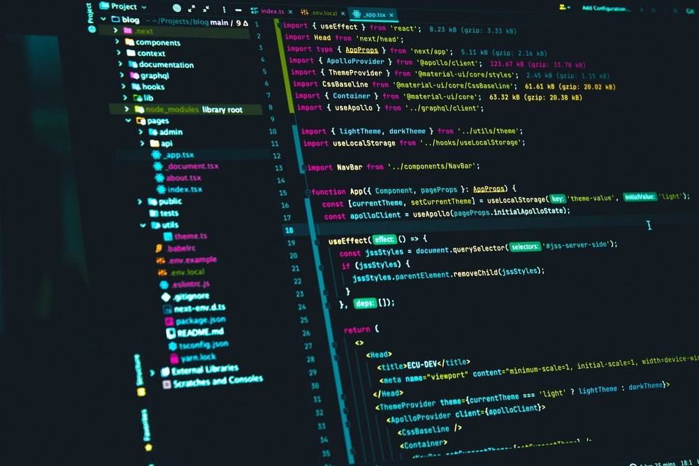

Teknologi web berkembang sangat pesat seiring dengan kemajuan zaman. Saat ini, website tidak hanya digunakan sebagai media informasi, tetapi juga sebagai platform bisnis dan komunikasi digital.

HTML merupakan dasar dari pembuatan website. Dengan HTML, kita dapat membuat struktur halaman seperti judul, paragraf, gambar, dan elemen lainnya dengan mudah.

Selain HTML, terdapat juga CSS yang digunakan untuk mempercantik tampilan website. CSS memungkinkan kita untuk mengatur warna, font, dan layout sehingga tampilan menjadi lebih menarik dan responsif.
JavaScript juga berperan penting dalam pengembangan web modern. Dengan JavaScript, website dapat menjadi lebih interaktif dan dinamis.